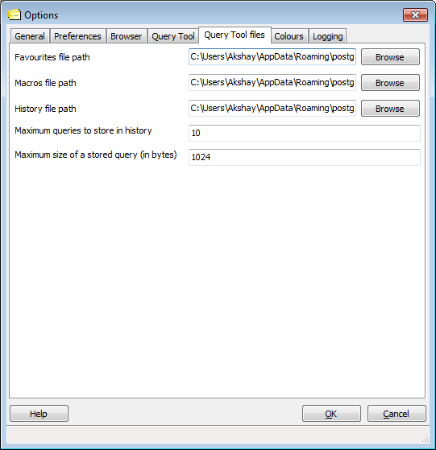

pgAdmin Options - Tab 5 (Query Tool Files)

- Favourites file path - File path to the favourites file.
- Macros file path - File path to the macros file.
- History file path - File path to the history file.
- Maximum queries to store in history - There won't be more
queries in the history file. New one replaces the older one.
- Maximum size of a stored query - All queries bigger than that
size won't be stored in the history file.